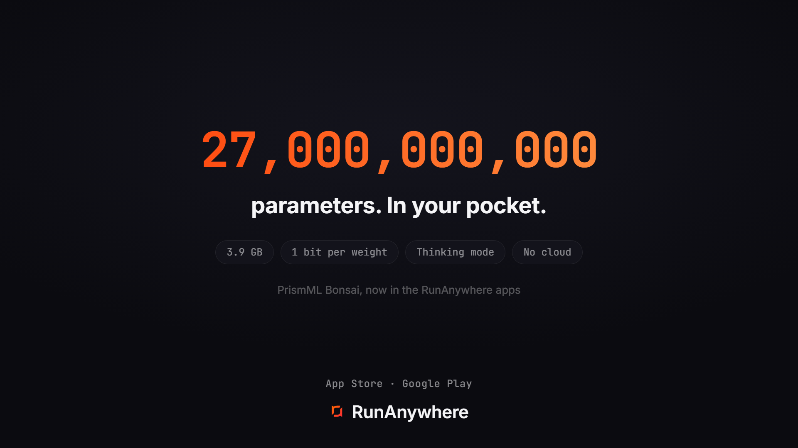

We Put a 27B Model in Your Pocket: PrismML Bonsai 1-bit on iPhone, Android, and Mac

Two years ago, a 27 billion parameter model was a data center tenant. It wanted a workstation GPU, 54 GB of memory, and a power supply you could hear.
This week we ran one on an iPhone. In a production app you can install right now.
Bonsai-27B 1-bit answering on an iPhone 17 Pro, recorded on device. Nothing leaves the phone.
The model is Bonsai-27B, PrismML's 1-bit rebuild of Qwen3.6 27B: same architecture, but every weight stored in a single bit. Not 4-bit, not 8-bit. One. It launched on July 14, crossed a million downloads in four days, and topped Hacker News with a 700-point thread.
Almost all of those downloads went to desktops and servers. The question everyone kept asking in those threads was whether any of this actually works on a phone.
It does. And on Android we went one step further, onto silicon where no 1-bit model had ever run: the NPU. Here is what that took.
One bit per weight, and why that is not a typo
Quantization normally works by rounding a trained model's weights to fewer bits, and below 4 bits the wheels usually come off. Bonsai is different: PrismML trains the low-bit representation directly. Every weight is +1 or -1, and one FP16 scale is shared across each group of 128 weights. Total cost: 1.125 bits per weight, embeddings and attention included, with no higher-precision escape hatches.

The results read like a misprint. PrismML reports the 1-bit 27B keeps about 90 percent of the FP16 model's quality, 76.11 against 85.07 on their 15-benchmark thinking-mode average. And here is the part that should not be possible: at 3.9 GB it outscores the 9.4 GB 2-bit quant of the same base model, which manages only 72.73.

Smaller than the standard low-bit quant, and better. That is why we cleared our week when these weights dropped.
Live on iPhone, Android, and Mac
The full Bonsai family, 1.7B through 27B in both 1-bit and 2-bit ternary variants, is in the Wally apps today. All of them reason: the apps stream the model's thinking as it works. Here they are, side by side:
Bonsai on Android, MacBook, and iPhone. One app, every backend.
And yes, the 27B 1-bit runs on all three. On a MacBook and an iPhone it runs through MLX or llama.cpp; on Android it runs through QHexRT on the Hexagon NPU, a world first we will get to in a minute, with llama.cpp covering every other CPU on the planet. Same models, same app, pick your device.
An 8B reasoning model in 1.21 GB deserves a second look. That is smaller than most photo libraries.
None of this was download-and-go. Bonsai's hybrid architecture, with GatedDeltaNet linear-attention layers, and its Q1_0 weight format are so new that stock llama.cpp cannot load these files yet, and 1-bit MLX support is still an open upstream PR. We integrated PrismML's forks of both, pinned in our open SDK, so the apps just work.
Then there was the part nobody had done at all.
The first true 1-bit model on any NPU
PrismML ships Bonsai for Apple Silicon and CUDA. On Android, the officially blessed answer is the CPU. The Hexagon NPU sitting in every modern Snapdragon, the most power-efficient inference silicon in the phone, has no idea what a binary matmul is. Its instruction set was never taught one.
A few research teams have gotten ternary models, 1.58 bits per weight, running on Hexagon in proof-of-concept demos. True binary weights, +1 and -1 and nothing else, had never executed on an NPU. Not on Hexagon, not on anyone's.
So we taught it. We wrote a custom QNN op package, a hand-built DSP-side binary that unpacks Bonsai's 1-bit weight groups and executes them on the Hexagon Tensor Processor. It installs alongside Qualcomm's standard skels, and QHexRT, our Hexagon runtime, routes Bonsai inference through it. The integration is public in the SDK; the compiled bundles are on our Hugging Face.
Bonsai-4B reasoning on the Qualcomm Hexagon NPU. The first true 1-bit model to run on an NPU.
Bonsai-4B and 8B run on Hexagon v75 and v81. The 27B runs on v81, the Snapdragon 8 Elite class. To our knowledge, Wally is the only runtime executing a true 1-bit model on any NPU today, and the only app shipping Bonsai on Android at all. This is not a lab demo. It is in the app on the Play Store, and you can run it before you finish this post.
Measure it yourself
Launch posts are where benchmarks go to be believed too easily, so we built the measurement into the product. The Wally apps include a benchmark harness: multi-trial runs, median with min and max variance, tokens per second, time to first token, prefill and decode split, memory delta, and a shareable results card at the end.
We ran it on the big one. Bonsai-27B 1-bit on an iPhone 17 Pro, on the CPU through llama.cpp: 10 tokens per second, with time to first token around 2 seconds. For a 27 billion parameter reasoning model on a phone, we will take it.

Now run it yourself. Download a Bonsai model on your phone, run the benchmark, and post the card. Share it with us on X @RunAnywhereAI and tag us. We would much rather argue about your numbers than ours, and we want to see the spread across devices.
Try it
The apps are free, on the App Store and Google Play. Open the model catalog, find PrismML, tap Get, and watch 27 billion parameters think on hardware you already own.
- Models: huggingface.co/runanywhere and huggingface.co/prism-ml
- SDK: github.com/RunanywhereAI/runanywhere-sdks
- QHexRT: what it is and how it performs
The phone in your pocket just became a reasoning machine. And if it is a Snapdragon, it is reasoning on silicon nobody had unlocked until this week. We think that is worth a download.